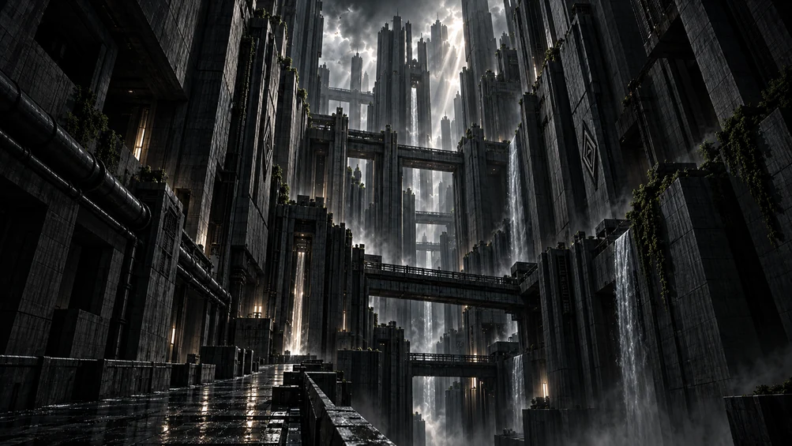
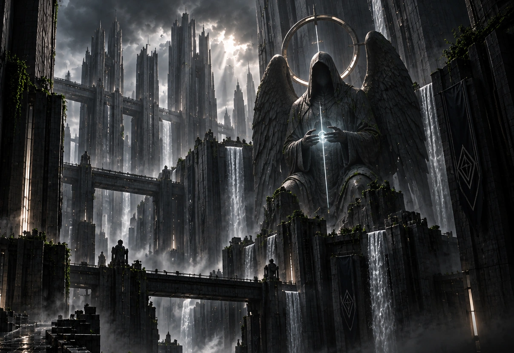

ARQUIVO I / O SANTUÁRIO
ENTRE O CONCRETO E O SAGRADO.
Layout 1 preservado. Três tratamentos de vidro para o painel esquerdo; escolha ainda em avaliação.
Ative JavaScript para experimentar as transições e alternar os materiais do painel. Esta página funciona sem internet.